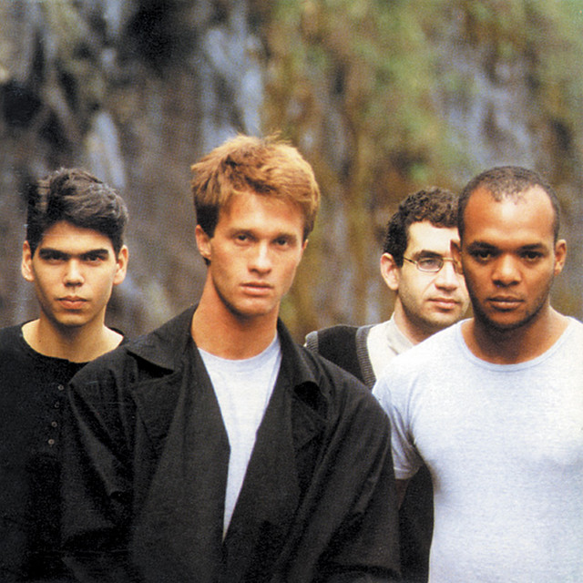
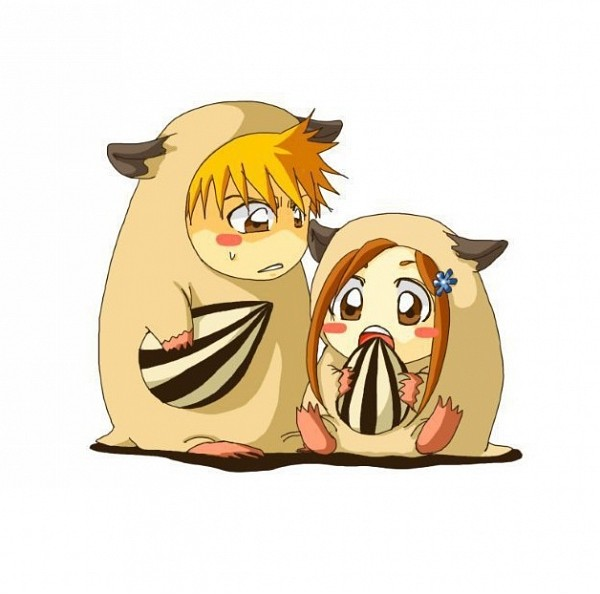
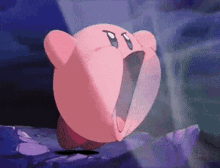

Você quer dar uma olhada?

✦ 23.09.2025 — 23.09.2026 ✦
Quem diria que estaríamos juntos há tanto tempo, né...
Eu queria começar essa carta demonstrando o quão grata eu sou por conhecer alguém como você. No início, eu tinha medo de ingressar em qualquer relacionamento devido ao fato de que eu já tive meus sentimentos invalidados por muitas pessoas, e isso me fez ter diversas inseguranças, principalmente por achar que não conseguiria ser o suficiente para a outra pessoa ou que não seria alguém interessante o bastante para se ter por perto. Infelizmente, são medos que ainda existem, mas que eu estou aprendendo a lidar e acabar com eles com a sua ajuda... Mas, por que eu trouxe isso à tona? Simples, quando eu aceitei virar essa chave e ingressar nesse relacionamento com você, é porque eu sabia que, mesmo que tivessem turbulências, você não me deixaria cair e estaria ali para me manter ao seu lado. Nossas conversas me passavam um sentimento de paz e um local seguro que eu simplesmente não queria sair, e quando eu reparei, eu já estava suspirando e com sorrisinhos bobos no rosto por sua causa.
Mas nem tudo são flores. Infelizmente, ainda existe uma parte minha que fica triste por se sentir insuficiente e por achar que não conhece tão bem o próprio namorado. Existe também uma parte minha que ainda se cobra muito, tentando conseguir te alcançar de novo, por achar que está simplesmente te deixando ir por não conseguir sequer manter uma conversa contigo.
Infelizmente, eu me cobro bastante por diversos motivos e, no âmbito romântico, não seria diferente. Mas estou trazendo isso para abrir um pouco mais o meu coração para você e, de certa forma, te agradecer.
Você deve estar se perguntando do que eu estou falando, né? E eu respondo: Pedro, se você não fosse tão paciente, se você não estivesse disposto a conversar e até mesmo a me contar como está a sua cabeça por dentro, eu sinto que estaria me cobrando ainda mais, estaria mais fundo nas minhas próprias inseguranças e acabaria não evoluindo como pessoa.
Além disso, eu também trouxe essa questão por lembrar da nossa última conversa, onde você deixou as coisas claras para mim e disse que não saberia quando as coisas poderiam mudar, mas que, em algum momento, elas mudariam.
E eu queria dizer algo para você gravar bem na sua mente: eu sempre irei te esperar.
Por mais ansiosa e insegura que eu seja, eu também não costumo desistir facilmente das pessoas que amo. Então, independentemente da relação que a gente tenha no futuro, eu sempre irei te esperar e guardar o teu espaço no meu coração.
Mas chega de falar de coisa "depre", afinal, estamos fazendo um ano juntos! (Apesar dos seus quase três anos de amizade.)
E eu posso dizer que, da mesma forma que você aprendeu comigo a ser alguém mais gentil, eu também aprendi com você a ser uma pessoa mais forte e a saber escolher quais batalhas eu deveria lutar.
Você é um homem incrível, Pedro, um poço de carisma e ensinamentos (você realmente deveria ser professor), que tende a evoluir a cada dia que passa e que, mesmo com as lutas internas, sempre vai dar um jeito de não cair. Como eu te disse uma vez, nego, você é bem mais forte do que imagina, e eu sempre serei orgulhosa disso.
Sabe, eu poderia ter feito isso aqui ser mais simples, talvez apenas uma carta pelo Docs, mas eu escolhi fazer algo especial, por mais simples que seja, pois pretendo atualizar esse presente conforme os anos forem se passando.
Quem sabe nesses próximos 365 dias a gente não crie algumas memórias presenciais e eu tenha algumas fotos nesse site? KKKKKKKK. Às vezes eu gosto de sonhar alto, e sempre me brota um sorriso no rosto quando penso em estar ao seu lado.
De verdade, Pedro, muito obrigada pelo seu amor, pelo seu carinho e por se dedicar a mim do seu jeito.
E, mesmo com tudo o que aconteceu, eu sigo dizendo a mim mesma que escolher você como parceiro com certeza foi uma das melhores escolhas que eu já tomei na minha vida.
Eu te amo e sempre estarei segurando a sua mão, mesmo que você não me veja ao seu lado.

E saiba que...
